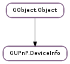

| Subclasses: | GUPnP.DeviceProxy, GUPnP.Device |
|---|
| get_context() | |
| get_description_value(element) | |
| get_device(type) | |
| get_device_type() | |
| get_friendly_name() | |
| get_icon_url(requested_mime_type, requested_depth, requested_width, requested_height, prefer_bigger) | |
| get_location() | |
| get_manufacturer() | |
| get_manufacturer_url() | |
| get_model_description() | |
| get_model_name() | |
| get_model_number() | |
| get_model_url() | |
| get_presentation_url() | |
| get_resource_factory() | |
| get_serial_number() | |
| get_service(type) | |
| get_udn() | |
| get_upc() | |
| get_url_base() | |
| list_device_types() | |
| list_devices() | |
| list_dlna_capabilities() | |
| list_dlna_device_class_identifier() | |
| list_service_types() | |
| list_services() |
| Name | Type | Flags | Description |
|---|---|---|---|
| context | GUPnP.Context | r/w/c | The GUPnP.Context |
| device-type | str | r/w/c | The device type |
| document | GUPnP.XMLDoc | w/c | The XML document related to this device |
| element | int | w/c | The XML element related to this device |
| location | str | r/w/c | The location of the device description file |
| resource-factory | GUPnP.ResourceFactory | r/w/c | The resource factory to use |
| udn | str | r/w/c | The UDN |
| url-base | Soup.URI | r/w/c | The URL base |
None
| Name | Type | Access |
|---|---|---|
| parent | GObject.Object | r |
Bases: GObject.Object
This struct contains private data only, and should be accessed using the functions below.
| Returns: | A GUPnP.Context. |
|---|---|
| Return type: | GUPnP.Context |
Get the associated GUPnP.Context.
| Parameters: | element (str) – Name of the description element to retrieve |
|---|---|
| Returns: | a newly allocated string or None if the device description doesn’t contain the given element |
| Return type: | str |
This function provides generic access to the contents of arbitrary elements in the device description file.
| Parameters: | type (str) – The type of the device to be retrieved. |
|---|---|
| Returns: | A new GUPnP.DeviceInfo. |
| Return type: | GUPnP.DeviceInfo |
Get the service with type type directly contained in info as a new object implementing GUPnP.DeviceInfo, or None if no such device was found. The returned object should be unreffed when done.
Note that devices are not cached internally, so that every time you call this function a new object is created. The application must cache any used devices if it wishes to keep them around and re-use them.
| Returns: | A string, or None. GLib.free () after use. |
|---|---|
| Return type: | str |
Get the friendly name of the device.
| Parameters: |
|
|---|---|
| Returns: | |
| Return type: |
Get a URL pointing to the icon most closely matching the given criteria, or None. If requested_mime_type is set, only icons with this mime type will be returned. If requested_depth is set, only icons with this or lower depth will be returned. If requested_width and/or requested_height are set, only icons that are this size or smaller are returned, unless prefer_bigger is set, in which case the next biggest icon will be returned. The returned strings should be freed.
| Returns: | A constant string. |
|---|---|
| Return type: | str |
Get the location of the device description file.
| Returns: | A string, or None. GLib.free () after use. |
|---|---|
| Return type: | str |
Get the manufacturer of the device.
| Returns: | A string, or None. GLib.free () after use. |
|---|---|
| Return type: | str |
Get a URL pointing to the manufacturer’s website.
| Returns: | A string, or None. GLib.free () after use. |
|---|---|
| Return type: | str |
Get the description of the device model.
| Returns: | A string, or None. GLib.free () after use. |
|---|---|
| Return type: | str |
Get the model name of the device.
| Returns: | A string, or None. GLib.free () after use. |
|---|---|
| Return type: | str |
Get the model number of the device.
| Returns: | A string, or None. GLib.free () after use. |
|---|---|
| Return type: | str |
Get a URL pointing to the device model’s website.
| Returns: | A string, or None. GLib.free () after use. |
|---|---|
| Return type: | str |
Get a URL pointing to the device’s presentation page, for web-based administration.
| Returns: | A GUPnP.ResourceFactory. |
|---|---|
| Return type: | GUPnP.ResourceFactory |
Get the GUPnP.ResourceFactory used by the device_info.
| Returns: | A string, or None. GLib.free () after use. |
|---|---|
| Return type: | str |
Get the serial number of the device.
| Parameters: | type (str) – The type of the service to be retrieved. |
|---|---|
| Returns: | A GUPnP.ServiceInfo. |
| Return type: | GUPnP.ServiceInfo |
Get the service with type type directly contained in info as a new object implementing GUPnP.ServiceInfo, or None if no such device was found. The returned object should be unreffed when done.
Note that services are not cached internally, so that every time you call this function a new object is created. The application must cache any used services if it wishes to keep them around and re-use them.
| Returns: | A string, or None. GLib.free () after use. |
|---|---|
| Return type: | str |
Get the Universal Product Code of the device.
| Returns: | A GLib.List of strings. The elements should be GLib.free ()’d and the list should be GLib.List.free ()’d. |
|---|---|
| Return type: | [str] |
Get a GLib.List of strings representing the types of the devices directly contained in info.
| Returns: | a GLib.List of new GUPnP.DeviceInfo objects. |
|---|---|
| Return type: | [GUPnP.DeviceInfo] |
Get a GLib.List of new objects implementing GUPnP.DeviceInfo representing the devices directly contained in info. The returned list should be GLib.List.free ()’d and the elements should be GObject.Object.unref ()’d.
Note that devices are not cached internally, so that every time you call this function new objects are created. The application must cache any used devices if it wishes to keep them around and re-use them.
| Returns: | a GLib.List of newly allocated strings or None if the device description doesn’t contain the <dlna:X_DLNACAP> element. |
|---|---|
| Return type: | [str] |
Get a GLib.List of strings that represent the device capabilities as announced in the device description file using the <dlna:X_DLNACAP> element.
| Returns: | a GLib.List of newly allocated strings or None if the device description doesn’t contain the <dlna:X_DLNADOC> element. |
|---|---|
| Return type: | [str] |
Get a GLib.List of strings that represent the device class and version as announced in the device description file using the <dlna:X_DLNADOC> element.
| Returns: | A GLib.List of strings. The elements should be GLib.free ()’d and the list should be GLib.List.free ()’d. |
|---|---|
| Return type: | [str] |
Get a GLib.List of strings representing the types of the services directly contained in info.
| Returns: | A GLib.List of new GUPnP.ServiceInfo objects. |
|---|---|
| Return type: | [GUPnP.ServiceInfo] |
Get a GLib.List of new objects implementing GUPnP.ServiceInfo representing the services directly contained in info. The returned list should be GLib.List.free ()’d and the elements should be GObject.Object.unref ()’d.
Note that services are not cached internally, so that every time you call function new objects are created. The application must cache any used services if it wishes to keep them around and re-use them.